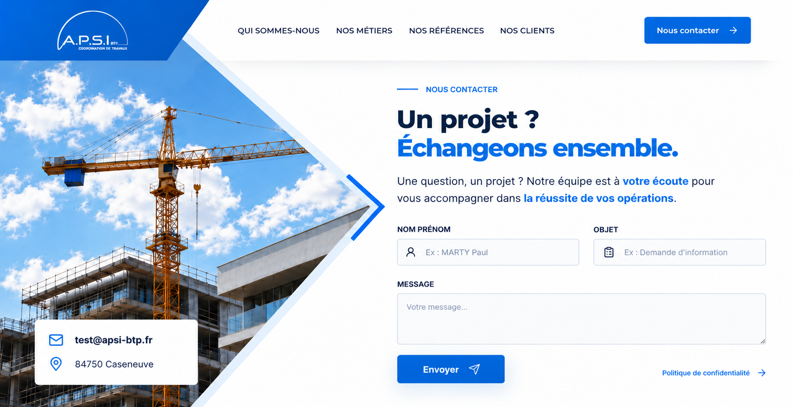
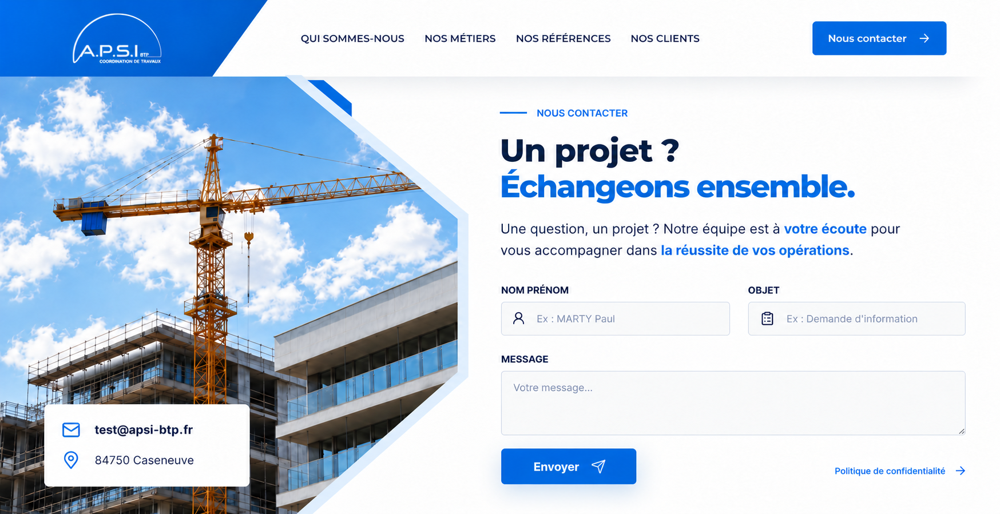
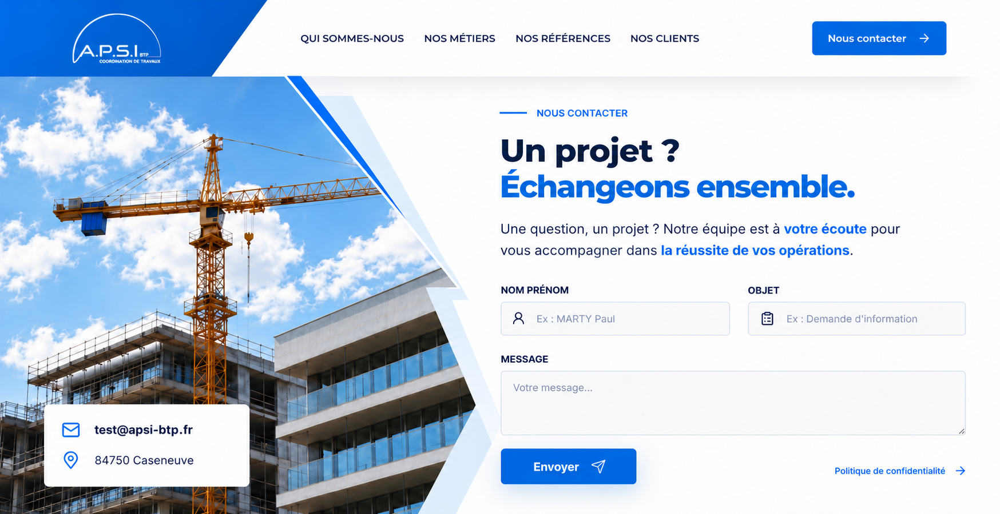

Maquettes visuelles générées à partir de la référence annotée. Cliquez sur une image pour l’ouvrir en grand.

Deux grandes diagonales et une pointe centrale, inspirées du tracé rouge.

Deux pans obliques reliés par une verticale, inspirés du tracé vert.

Décroché géométrique et plans bleus superposés pour un cadre plus artistique.